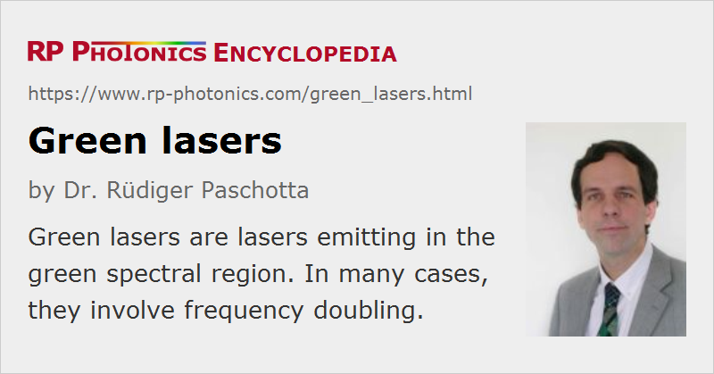

Green Lasers
Definition: lasers emitting in the green spectral region
More general term: visible lasers
German: grüne Laser
How to cite the article; suggest additional literature
Author: Dr. Rüdiger Paschotta
This article concerns lasers emitting in the green spectral region, i.e., with a wavelength roughly around 510–570 nm. The choice of laser gain media for such wavelengths is limited, and the performance achievable is typically not as good as e.g. in the infrared spectral region. Nevertheless, green-emitting lasers of various kinds belong to the most often used visible lasers. Some of them are based on nonlinear frequency conversion, namely frequency doubling.
Types of Green Lasers
There are many types of green lasers, which differ substantially e.g. in terms of output power, pulse format and cost:
- Argon ion lasers, based on amplification in an argon plasma (made with an electrical discharge), are fairly powerful light sources for various wavelengths. The highest power can be achieved in green light at 514.5 nm. It can exceed 20 W, but the power efficiency of such lasers is very poor, so that tens of kilowatts of electric power are required for multi-watt green output, and the cooling system has corresponding dimensions. There are smaller tubes for air-cooled argon lasers, requiring hundreds of watts for generating some tens of milliwatts. The beam quality can be close to diffraction-limited.
- Helium–neon lasers are most well known as red lasers, but they can also be made to emit a few milliwatts at 543.5 nm.
- Copper vapor lasers can emit relatively high powers at 510.6 nm. They are based on a pulsed discharge in copper vapor and emit nanosecond pulses.
- Green laser diodes (or other green semiconductor lasers) are difficult to produce – even more difficult than blue ones. They can emit only a few milliwatts and have relatively short lifetimes, compared with other laser diodes [5]. However, there has been encouraging progress recently [10, 11].
- Erbium-doped upconversion lasers based on erbium-doped fibers or bulk crystals can emit around 550 nm, typically with some tens of milliwatts of output power and with high beam quality.
- Praseodymium-doped lasers can emit green light (e.g., Pr3+:YLF at 523 nm), apart from light at various other wavelength. They can be pumped with blue light from laser diodes, for example.

- There are various types of frequency-doubled solid-state lasers, where the actual laser emits in the 1-μm spectral region and a frequency doubler (based on a nonlinear crystal material such as LiNbO3, LBO or KTP) converts this radiation into green light. The frequency doubling process can take place either outside the laser or within the resonator. Most common is an output wavelength of 532 nm, obtained by doubling 1064-nm radiation from a neodymium-doped 1064-nm Nd:YAG laser or Nd:YVO4 laser, and 515 nm from doubling the output of a 1030-nm Yb:YAG laser. Figure 1 shows an example. Output powers of multiple watts can be easily obtained, even with single-frequency operation and high beam quality. Hundreds of watts of green light are generated with some high-power lasers. Fiber lasers are also interesting sources, in particular when their ability to produce somewhat different wavelengths is relevant. For smaller powers, frequency-doubled microchip lasers or laser diodes (e.g. for green laser pointers) can be used (sometimes with pulsed pumping or with a semiconductor optical amplifier for increased power efficiency of the frequency doubler).
- High-power optically pumped VECSELs are also very attractive laser sources for frequency doubling with several watts or even tens of watts of output power [8]. For lower powers, semiconductor DFB lasers can be used. Note that other kinds of semiconductor lasers, such as broad area laser diodes, are less suitable for frequency doubling due to a typically broader linewidth and poor beam quality.
- There are dye lasers which can be operated in the green spectral region with wide tunability.
Applications
Green lasers are used e.g. as laser pointers, for laser projection displays (as part of RGB sources), for printing, in interferometers, bioinstrumentation, medical scanning, and for pumping of solid-state lasers (e.g. titanium–sapphire lasers). In laser material processing, green lasers (when compared with near-infrared lasers) can bring benefits via a much higher absorption coefficient e.g. in copper, gold, or silicon.
Suppliers
The RP Photonics Buyer's Guide contains 111 suppliers for green lasers. Among them:
Questions and Comments from Users
Here you can submit questions and comments. As far as they get accepted by the author, they will appear above this paragraph together with the author’s answer. The author will decide on acceptance based on certain criteria. Essentially, the issue must be of sufficiently broad interest.
Please do not enter personal data here; we would otherwise delete it soon. (See also our privacy declaration.) If you wish to receive personal feedback or consultancy from the author, please contact him e.g. via e-mail.
By submitting the information, you give your consent to the potential publication of your inputs on our website according to our rules. (If you later retract your consent, we will delete those inputs.) As your inputs are first reviewed by the author, they may be published with some delay.
Bibliography
| [1] | A. J. Silversmith et al., “Green infrared-pumped erbium upconversion laser”, Appl. Phys. Lett. 51, 1977 (1987), doi:10.1063/1.98316 |
| [2] | F. Tong et al., “551 nm diode-laser-pumped upconversion laser”, Electron. Lett. 25, 1389 (1989), doi:10.1049/el:19890930 |
| [3] | T. Hebert et al., “Blue and green CW upconversion lasing in Er:YLiF4”, Appl. Phys. Lett. 57, 1727 (1990), doi:10.1063/1.104048 |
| [4] | T. J. Whitley et al., “Upconversion pumped green lasing in erbium doped fluorozirconate fibre”, Electron. Lett. 27 (20), 1785 (1991), doi:10.1049/el:19911110 |
| [5] | E. Kato et al., “Significant progress in II-VI blue-green laser diode lifetime”, Electron. Lett. 34, 282 (1998), doi:10.1049/el:19980229 |
| [6] | L. McDonagh and R. Wallenstein, “Low-noise 62 W CW intracavity-doubled TEM00 Nd:YVO4 green laser pumped at 888 nm”, Opt. Lett. 32 (7), 802 (2007), doi:10.1364/OL.32.000802 |
| [7] | C. Stolzenburg et al., “Cavity-dumped intracavity-frequency-doubled Yb:YAG thin-disk laser with 100 W average power”, Opt. Lett. 32 (9), 1123 (2007), doi:10.1364/OL.32.001123 |
| [8] | J.-Y. Kim et al., “Highly efficient green VECSEL with intra-cavity diamond heat spreader”, Electron. Lett. 43 (2), 105 (2007), doi:10.1049/el:20072787 |
| [9] | O. B. Jensen et al., “1.5 W green light generation by single-pass second harmonic generation of a single-frequency tapered diode laser”, Opt. Express 17 (8), 6532 (2009), doi:10.1364/OE.17.006532 |
| [10] | T. Miyoshi et al., “510–515 nm InGaN-based green laser diodes on c-plane GaN substrate”, Appl. Phys. Express 2, 062201 (2009), doi:10.1143/APEX.2.062201 |
| [11] | H. Ohta et al., “Future of group-III nitride semiconductor green laser diodes”, J. Opt. Soc. Am. B 27 (11), B45 (2010), doi:10.1364/JOSAB.27.000B45 |
| [12] | T. Meier et al., “Continuous-wave single-frequency 532 nm laser source emitting 130 W into the fundamental transversal mode”, Opt. Lett. 35 (22), 3742 (2010), doi:10.1364/OL.35.003742 |
| [13] | R. Cieslak and W. A. Clarkson, “Internal resonantly enhanced frequency doubling of continuous-wave fiber lasers”, Opt. Lett. 36 (10), 1896 (2011), doi:10.1364/OL.36.001896 |
See also: lasers, laser diodes, frequency doubling, intracavity frequency doubling, blue lasers, red lasers, yellow and orange lasers, visible lasers, titanium–sapphire lasers, The Photonics Spotlight 2006-12-16, The Photonics Spotlight 2009-04-06, The Photonics Spotlight 2009-04-17
and other articles in the category lasers
|  |
If you like this page, please share the link with your friends and colleagues, e.g. via social media:
These sharing buttons are implemented in a privacy-friendly way!